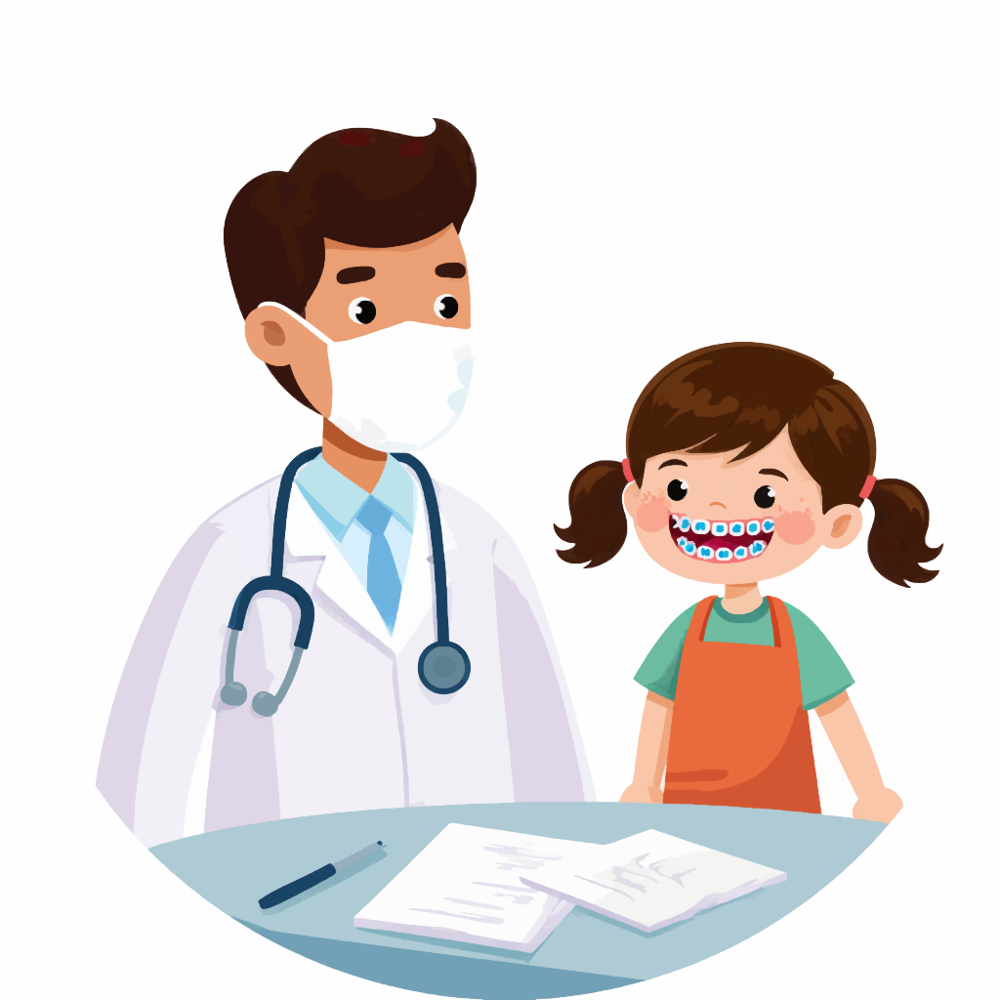

Ортодонт: архитектор вашей улыбки и здоровья
Путеводитель от эксперта с 15-летним стажем
Здравствуйте, дорогие читатели! Меня зовут Анна, и вот уже 15 лет я помогаю людям обретать не только красивые улыбки, но и крепкое здоровье. За годы практики в стоматологии я убедилась в одном простом, но очень важном факте: нет ничего ценнее уверенности, которую дарят ровные и здоровые зубы. А главный специалист, который отвечает за эту гармонию, — врач-ортодонт.
Сегодня я хочу стать вашим проводником в мире ортодонтии. Мы разберёмся, кто такой ортодонт, чем он отличается от других стоматологов и почему его консультация может стать одним из самых важных шагов в вашей жизни.
Кто такой врач-ортодонт и чем он занимается?
Если представить зубочелюстную систему как сложный механизм, то ортодонт — это инженер-настройщик. Его задача — исправить прикус и выровнять зубы, чтобы система работала безупречно. Он не лечит кариес и не ставит пломбы. Его инструменты — брекет-системы, каппы, пластинки и другие аппараты, которые мягко и постепенно перемещают зубы в правильное положение.
Часто пациенты спрашивают: «Анна, а чем ортодонт отличается от стоматолога-ортопеда?» Отличный вопрос! Это два совершенно разных специалиста.
- Ортодонт выравнивает то, что дала природа: перемещает зубы, корректирует положение
челюстей.
- Ортопед (протезист) восстанавливает утраченное: устанавливает коронки, мосты,
виниры, протезы.
Представьте: ортодонт выравнивает фундамент и стены, а ортопед создаёт на этом основании красивый фасад. Очень часто они работают в тандеме ради идеального результата.
Почему так важен прикус?
Прикус (или окклюзия) — это то, как смыкаются зубы. Правильный прикус — не просто эстетика, а основа здоровья всего организма.

Представьте новую машину с идеально отбалансированными колёсами. Она едет плавно, без шума, резина служит долго. Теперь вообразите, что развал-схождение нарушен: машину начинает «вести», шины быстро изнашиваются, страдают подвеска и подшипники.
С прикусом происходит то же самое. Его нарушения ведут к проблемам:
- Преждевременный износ зубов (перегрузка отдельных зубов, чувствительность, стираемость эмали).
- Заболевания дёсен (затруднена гигиена, риск гингивита и пародонтита).
- Нарушения работы ВНЧС (щелчки, боли в суставе, головные боли, боли в спине).
- Нарушение дикции и дыхания.
- Трудности с пережёвыванием пищи и, как следствие, проблемы с пищеварением.
Вот почему ортодонтическое лечение — это не только про улыбку, но и про здоровье всего организма.
Волшебные инструменты: брекет-системы
Сердце ортодонтии — это брекеты. За последние 15 лет они прошли огромный путь: от громоздких конструкций до миниатюрных и эстетичных систем.
- Металлические — классика, прочные и доступные по цене.
- Керамические — полупрозрачные, сливаются с цветом эмали.
- Сапфировые — прозрачные, выглядят как украшение.
- Лингвальные — крепятся с внутренней стороны зубов, абсолютно незаметны.
Выбор системы всегда индивидуален и зависит от клинической ситуации, образа жизни и бюджета.
Исправлять нельзя откладывать: детский ортодонт
Многие думают, что ортодонтия нужна только подросткам и взрослым. На самом деле первый визит к детскому ортодонту стоит запланировать в 4–5 лет, когда прорезались все молочные зубы.

Зачем так рано? В этом возрасте врач может оценить развитие челюстей и вовремя заметить вредные привычки (сосание пальца, прокладывание языка между зубами). Иногда достаточно простых пластинок или упражнений, чтобы скорректировать рост челюсти и избежать серьёзного лечения в будущем.
Детский ортодонт — ещё и психолог: он умеет находить общий язык с маленькими пациентами и превращать лечение в игру.
Как проходит ортодонтическое лечение?
Путь к идеальной улыбке — это марафон. Вот основные этапы:
- Консультация и диагностика. Осмотр, беседа, снимки (ОПТГ и ТРГ) — без них
невозможно составить план.
- План лечения. Индивидуальный маршрут, выбор аппаратов, прогноз сроков (обычно 1–2,5
года).
- Подготовка. Гигиена и лечение зубов до фиксации брекетов.
- Установка системы. Безболезненно, но занимает время.
- Плановые визиты. Раз в 1–2 месяца — активация системы.
- Снятие брекетов и ретенция. Закрепление результата с помощью ретейнеров или капп.
Этот этап длится в 2 раза дольше основного лечения.
Не бойтесь сделать шаг

Дорогие мои, если вы мечтаете о ровных зубах, но вас удерживает страх или мифы о брекетах, просто запишитесь на консультацию ортодонта. Это ни к чему вас не обязывает. Вы получите точную информацию: что возможно именно в вашем случае, сколько займёт лечение и во сколько обойдётся.
По моему опыту, никто из пациентов не пожалел о пройденном лечении. Жалеют лишь о том, что не начали раньше. Ведь ровные зубы — это не только красиво, но и вклад в здоровье, уверенность и качество жизни на годы вперёд.
Ваша Анна.